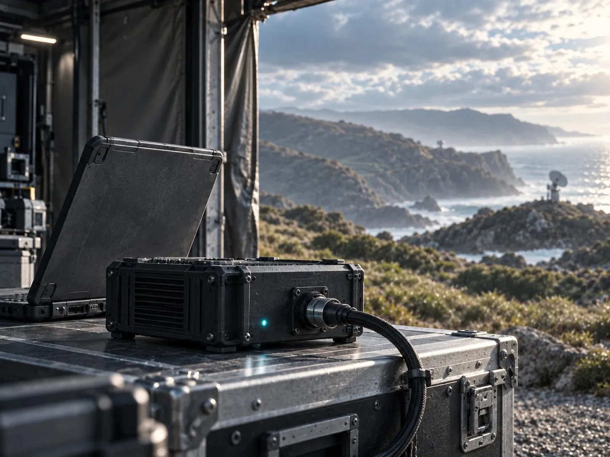
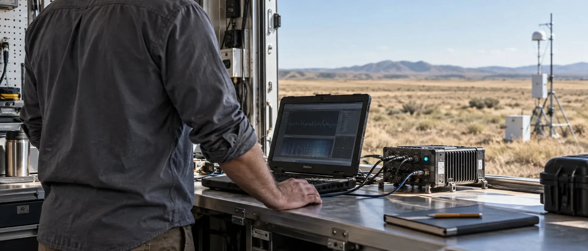

Agentic AI for the mission
Astrion / Agentic AI
AI agents that read the records, do the work and leave the decision to a person.
01 / What we build
Astrion turns agentic AI into field-ready capability. Fast, proven and mission-informed.
We are the bridge between innovation and operational reality.
02 / How every agent works
Every agent works the same way.
-
01
Retrieve
Agents read the approved records, manuals and telemetry a program already owns.
-
02
Reason
A language model drafts the finding, the plan or the note, with a citation on every claim.
-
03
Review
A second agent checks the draft. A person approves it. Nothing ships on its own.
03 / The agents
Four agents at work.
-
01
Evidence review
Reads test, calibration and maintenance records and drafts a cited readiness finding.
On program records
-
02
Mission tasking
Turns an operator's intent into tasks across systems from many vendors, and re-plans when the picture changes.
Above the stack
-
03
Edge inference
Small models on field laptops, vessels and payloads. Works disconnected.
Disconnected
-
04
Release assurance
Scores every model release against the same engineering questions before it fields.
Before fielding
04 / Where they work
From seabed to orbit.
Six domains. One agent in each, in a line.

Terrain
Offline maintenance assistant
Finds the approved procedure on a field laptop and flags an expired copy.
Atmosphere
Flight-test coverage
Matches flight cards to recorded runs and flags objectives without a usable measurement.
Maritime
Machinery health
Compares pump vibration at similar loads and pairs an odd reading with its repair history.
Subsea
Survey quality
Aligns depth readings with the survey log and keeps estimates apart from observations.

Orbit
Interface review
Reads two revisions of a payload specification and finds the ground tests that must change.

Cyber
Assurance evidence
Matches a software build to its signed test report and flags the gap when one is missing.
Illustrative applications
05 / The rule
Agents recommend. People decide.
- 01
Every finding cites its source.
- 02
Every plan waits for approval.
- 03
Every reviewed case becomes a test for the next release.

06 / Proof
Field-proven.
- Autonomous nautical miles supported at sea
- 38,000+
- Programs across defense, space, intelligence, cyber and civil
- ~150
- States, plus the Netherlands
- 36+ NL
- Cleared workforce
- 71%
Sea Hunter and Seahawk for the U.S. Navy. PAMI-1 for the Netherlands. The same engineers now build the agents.
Innovation fuels it. Engineering proves it. Astrion makes it mission-ready.
07 / Contact
Bring one question.
Tell us the decision your team makes today and the records it trusts. We will scope the pilot.